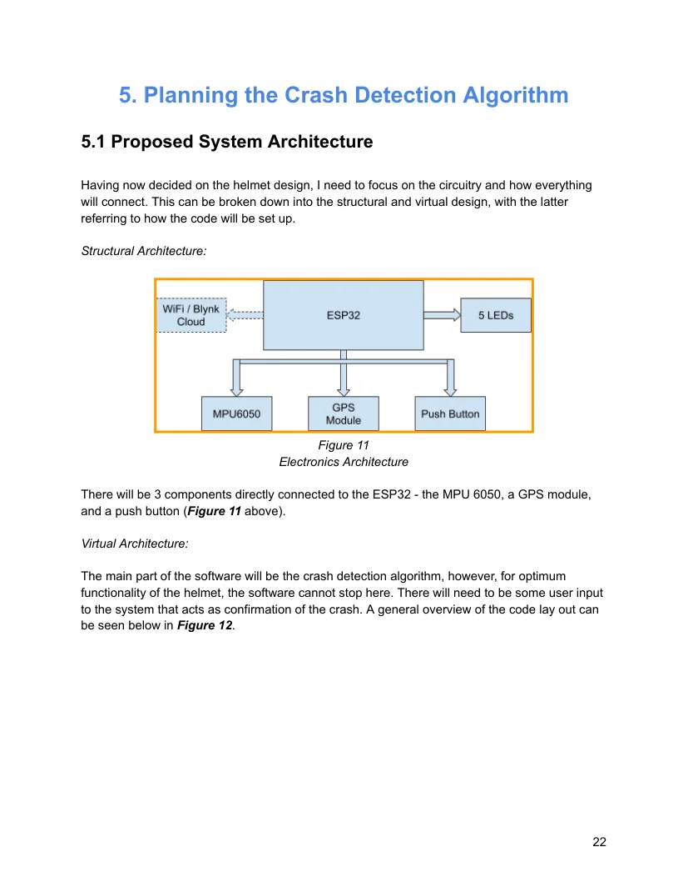

Smart Motorcycle
Crash Detection Helmet.
A proof-of-concept safety system combining inertial sensors, on-device data analysis, GPS and connected notifications to distinguish everyday motion from impact-like events.
See the helmet in action.
Watch the product demonstration and a closer technical walkthrough before exploring the design, data and testing below.
Product demonstration
Motion classification, warning signals and test notifications.
Engineering walkthrough
A closer explanation of how the prototype was developed.
 Physical prototype
Physical prototype
System architectureWhat happens when a rider cannot call for help?
I wanted to investigate how electronics built into a motorcycle helmet could recognise potentially serious motion and automatically issue a location-aware alert. A second challenge was to reduce nuisance notifications from normal riding, bumps and other movement.
To avoid unintended calls, the prototype was deliberately not connected to emergency services. Tests instead delivered notifications through the Blynk platform to a designated personal device.
A connected sensing platform.
I selected the ESP32 for its connectivity, the MPU6050 for accelerometer and gyroscope data, and a GPS module for location. The design included warning LEDs and a rider-operated cancel button.
- Sensor-based detection, not a phone-only approach.
- Separate responsibilities for event detection and GPS positioning.
- An opportunity for the rider to cancel a false alarm before a test notification is sent.
From a stream of readings to a decision.
I gathered acceleration and rotational-motion data and used a rolling time window to calculate features including acceleration standard deviation and 99th-percentile measurements. Rather than depending on one threshold, the code classifies events as normal, disturbance or impact-like.
Testing the system — and documenting its limits.
My final validation table recorded five successful classifications each for normal movement, shaking, hard tapping and controlled impact/drop tests. All three cancellation trials stopped the alert, and all three non-cancelled trials generated a Blynk notification.
GPS positioning was less consistent: a map link opened correctly in 3 out of 5 tests. These tests were controlled demonstrations, not real motorcycle crashes; they do not establish real-world crash-detection reliability.